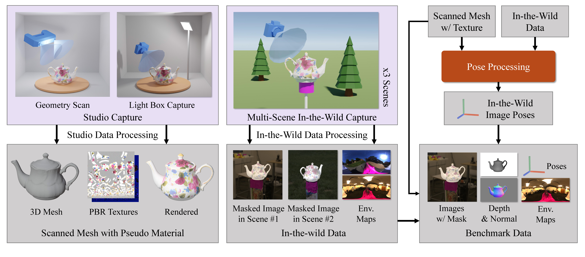

A Real-World 3D Object Inverse Rendering Benchmark
NeurIPS 2023 Datasets & Benchmarks Track
Stanford University

TL;DR
We present a novel real-world 3D Object inverse Rendering Benchmark, Stanford-ORB, to evaluate object inverse rendering methods. The benchmark consists of:
- 2,795 HDR images of 14 objects captured in 7 in-the-wild scenes (each object is captured in 3 scenes);
- 418 HDR ground truth environment maps aligned with image captures;
- Studio captured textured mesh of all objects;
- A set of comphehensive benchmarks for inverse rendering evaluation;
The benchmark is set to be plug & play -- all data has been cleaned and organized in the most common structures (i.e. Blender, LLFF, Colmap). We also provide the scripts for dataloading and evaluation, along with the results from various state-of-the-art methods. To test your model, check our github page for more details.
Gallary
Scanned Meshes (Texture generated from NVDiffRec)
Grogu
Curry
Gnome
Teapot
Car
Pepsi
Image Captures

Overview
The figure shows the overall pipeline of data capture. For each object, Left: we obtain its 3D shape using a 3D scanner and Physics-Based Rendering (PBR) materials using high-quality light box images. Middle: we also capture multi-view masked images in 3 different in-the-wild scenes, together with the ground-truth environment maps. Right: we carefully register the camera poses for all images using the scanned mesh and recovered materials, and prepare the data for the evaluation benchmarks. Credit to Maurice Svay for the low-poly camera mesh model.
Benchmark Design
Our benchmark is based on the single-scene reconstrution. That means, to test a model, it should be trained with one of our datapoints (i.e. images of one object captured in one scene) and being evaluted at a time. . The evaluation includes:
- Novel View Synthesis: Evaluating the inferred novel views in the same scene;
- Novel Scene Relighting: Evaluating the inferred novel views in novel scenes, given ground-truth environment map;
- Geometry Estimation: Evaluating the reconstructed 3D geometry.
Results
Quantitative Results
| Method | Geometry Estimation | Novel Scene Relighting | Novel View Synthesis | ||||||||
|---|---|---|---|---|---|---|---|---|---|---|---|
| Depth↓ | Geometry↓ | Shape↓ | PSNR-H↑ | PSNR-L↑ | SSIM↑ | LPIPS↓ | PSNR-H↑ | PSNR-L↑ | SSIM↑ | LPIPS↓ | |
| Novel View Synthesis / 3D Reconstruction Methods | |||||||||||
| IDR | 0.35 | 0.05 | 0.30 | N/A | 30.11 | 39.66 | 0.990 | 0.017 | |||
| NeRF | 2.19 | 0.62 | 62.05 | N/A | 26.31 | 33.59 | 0.968 | 0.044 | |||
| Material Decomposition Methods | |||||||||||
| Neural-PIL | 0.86 | 0.29 | 4.14 | N/A | 25.79 | 33.35 | 0.963 | 0.051 | |||
| PhySG | 1.90 | 0.17 | 9.28 | 21.81 | 28.11 | 0.960 | 0.055 | 24.24 | 32.15 | 0.974 | 0.047 |
| NVDiffRec | 0.31 | 0.06 | 0.62 | 22.91 | 29.72 | 0.963 | 0.039 | 21.94 | 28.44 | 0.969 | 0.030 |
| NeRD | 1.39 | 0.28 | 13.70 | 23.29 | 29.65 | 0.957 | 0.059 | 25.83 | 32.61 | 0.963 | 0.054 |
| NeRFactor | 0.87 | 0.29 | 9.53 | 23.54 | 30.38 | 0.969 | 0.048 | 26.06 | 33.47 | 0.973 | 0.046 |
| InvRender | 0.59 | 0.06 | 0.44 | 23.76 | 30.83 | 0.970 | 0.046 | 25.91 | 34.01 | 0.977 | 0.042 |
| NVDiffRecMC | 0.32 | 0.04 | 0.51 | 24.43 | 31.60 | 0.972 | 0.036 | 28.03 | 36.40 | 0.982 | 0.028 |
| Single-View Prediction Methods | |||||||||||
| SI-SVBRDF | 81.48 | 0.29 | N/A | N/A | N/A | ||||||
| SIRFS | N/A | 0.59 | N/A | N/A | N/A | ||||||
| Reference Results | |||||||||||
| NVDiffRecMC+GT Mesh | N/A | 25.08 | 32.28 | 0.974 | 0.027 | N/A | |||||
| NVDiffRec+GT Mesh | N/A | 24.93 | 32.42 | 0.975 | 0.027 | N/A | |||||
Qualitative Results
Download Links
For convenience proposes, we provide separate download links for images organized in different data structures, and the auxiliary files.
- blender_LDR.tar.gz (11G): LDR images and camera files (organized as the Blender Dataset structure);
- blender_HDR.tar.gz (72G): HDR images and camera files (organized as the Blender Dataset structure);
- llff_colmap_LDR.tar.gz (11G): LDR images and camera files (organized as the LLFF Dataset structure and as the Colmap's structure);
- llff_colmap_HDR.tar.gz (72G): HDR images and camera files (organized as the LLFF Dataset structure and as the Colmap's structure);
- ground_truth.tar.gz (4.8G): GT environment maps, 3D meshes, depth maps, normal maps, and pesudo-gt albedo maps.
Citation
The website template was borrowed from Michaël Gharbi.